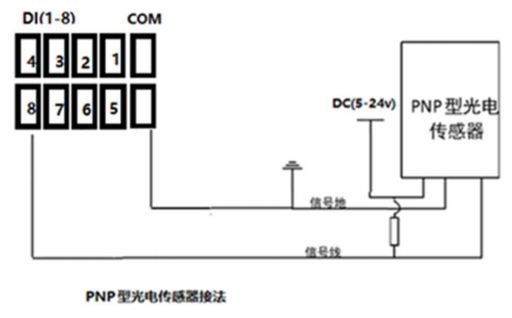
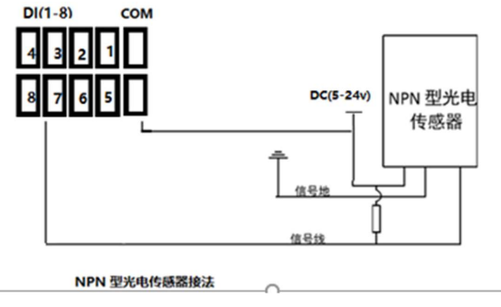

DI输入工具目前只能在包含有DIO硬件模块的工控机上可以正常使用。主要用来识别外部信号的触发(生效)状态。
DI输入支持PNP和NPN两种接线方式。PNP指的是高电平有效(低电平无效)，NPN指的是低电平有效(高电平无效)。客户需要根据DI输入对接设备的接线方式来正确接线。
PNP接线方式如下图所示：

PNP 型设备接 IO 输入, DI_COM1-2 接 PNP 型传感器的 GND， 信号线接 DI(1-8)， 电阻根据传感器的要求在信号线上 PULL DOWN 电阻。
NPN接线方式如下图所示:

NPN 型设备接 IO 输入, DI_COM1-2 接 NPN 型传感器， 信号线接 DI(1-8)， 电阻根据传感器的要求在信号线上 PULL HIGH 电阻。
工程中使用DIO通信，可以通过DI接收工具来获取所有(8~16路)DI输入引脚的触发(有效)状态。
无
| 参数名称 | 参数描述 |
|---|---|
| DI1触发状态 | 显示DI引脚1的触发（有效）状态引脚输出结果，true代表触发（有效），false代表未触发（无效） |
| DI2~DI8触发状态 | 参考DI1触发状态说明 |
| 所有DI触发状态按位和结果 | 按位和指的是其bit0~bit7分别对应DI引脚1~8的触发状态，例如：结果是170代表引脚2、4、6、8处于触发（有效）状态，引脚1、3、5、7代表未触发(无效)状态 |
| 执行结果 | 工具执行结果。 |
| 执行时间 | 工具执行时间。 |
- 工控机只有包含DIO硬件模块时该工具才能正常执行。
- DI工具输出的触发状态不是高低电平的状态，而是结合接线方式之后的触发状态。 例如：PNP接线方式并且接线正确的前提下，输出true代表当前是高电平，输出false代表低电平。NPN接线方式则相反。
无